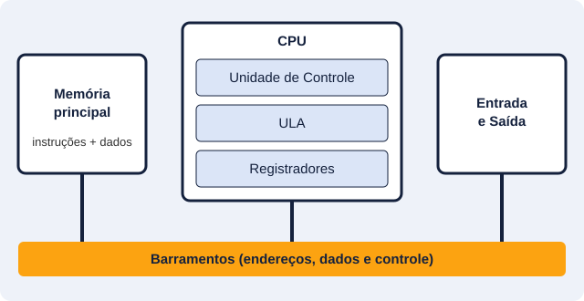
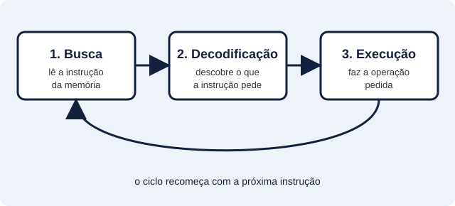
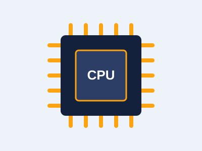
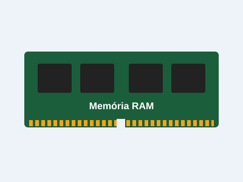
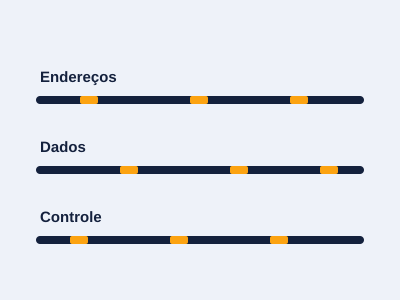
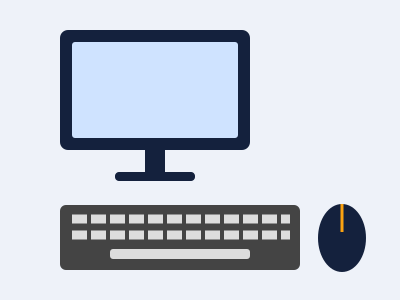

CPU
Executa instruções usando a unidade de controle, a ULA e registradores rápidos.
Design de interfaces - Trabalho final
O modelo que organiza CPU, memória e dispositivos de entrada e saída continua sendo a base conceitual dos computadores atuais.
Começar a explorar
Proposta em 1945 no relatório sobre o EDVAC, a arquitetura de Von Neumann introduziu a ideia de programa armazenado: dados e instruções ficam na memória principal e são acessados pela CPU.
Executa instruções usando a unidade de controle, a ULA e registradores rápidos.
Guarda programas e dados em posições identificadas por endereços.
Conecta o computador a teclados, telas, discos, redes e outros dispositivos.
Transportam endereços, dados e sinais de controle entre os componentes.

Ilustrações dos elementos principais do modelo de Von Neumann.




Use este formulário para registrar uma resposta e praticar os conceitos vistos na página. Os campos usam os tipos adequados de cada informação.
Uma segunda galeria, organizada com CSS Grid, destaca a identidade visual do projeto e os quatro componentes fundamentais estudados.